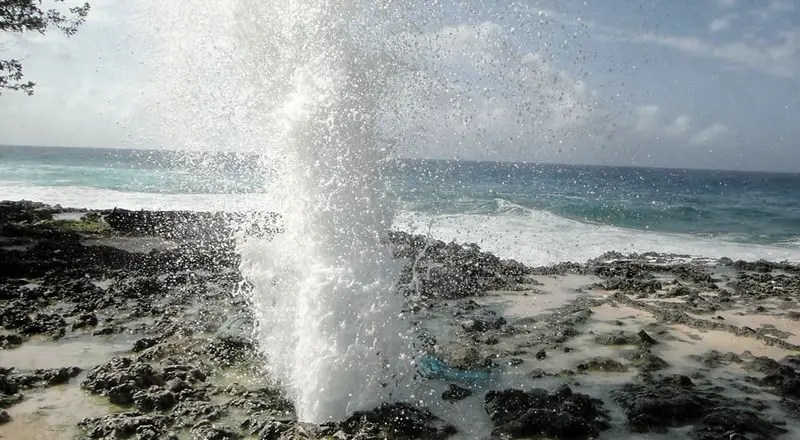
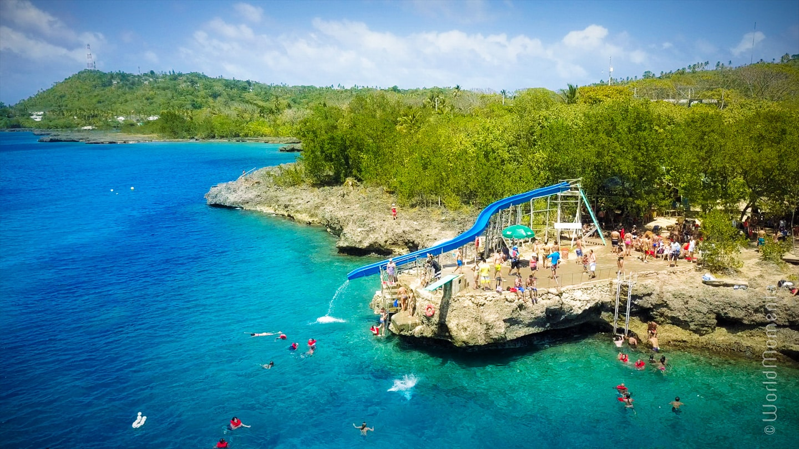

La isla de San Andrés es una joya caribeña situada en el mar Caribe, perteneciente a Colombia. Conocida por sus playas de arena blanca y aguas cristalinas de tonos turquesa, es un destino popular para el buceo, snorkel y otras actividades acuáticas. Su ambiente relajado y su cultura única, que fusiona influencias africanas, inglesas y caribeñas, la convierten en un destino encantador para vacacionar. Además de sus hermosas playas, la isla ofrece una rica biodiversidad marina, así como una interesante historia colonial y una variada oferta gastronómica.
Lugares turisticos en San Andres
Hoyo Soplador

El Hoyo Soplador es un fenómeno natural ubicado en la isla de San Andrés, en Colombia. Consiste en un agujero en la roca caliza costera, conectado con el mar a través de túneles subterráneos. Cuando las olas golpean la costa y el agua es empujada hacia los túneles, el aire es expulsado violentamente por el agujero, creando un sonido y un chorro de agua que puede alcanzar varios metros de altura. Es una atracción turística popular donde los visitantes pueden presenciar este impresionante espectáculo natural y tomar fotografías mientras disfrutan de la belleza costera de San Andrés.
West View

West View es una popular atracción turística ubicada en la isla de San Andrés, en Colombia. Es conocida por su impresionante área de snorkel, donde los visitantes pueden explorar la colorida vida marina del Caribe. Además del snorkel, West View ofrece otras actividades acuáticas como buceo, paseos en kayak y deslizamiento en toboganes acuáticos. También cuenta con áreas para relajarse, tomar el sol y disfrutar de bebidas refrescantes. Con su vibrante ambiente y hermosas vistas al mar, West View es un destino imperdible para aquellos que visitan San Andrés en busca de aventura y diversión acuática.
Cueva de Morgan
La Cueva de Morgan, también conocida como "Cueva del Pirata", es una fascinante atracción turística ubicada en la isla de San Andrés, Colombia. Se dice que fue utilizada como escondite por el famoso pirata Henry Morgan durante el siglo XVII. La cueva ofrece a los visitantes la oportunidad de explorar pasajes subterráneos y admirar formaciones rocosas naturales mientras aprenden sobre la historia de la isla y las leyendas de los piratas que la habitaron. Con su misterioso ambiente y su conexión con el pasado de San Andrés, la Cueva de Morgan es una parada interesante para aquellos que buscan aventura y cultura en la isla.
Itinerario de 5 días en San Andres
Día 1: Llegada a San Andrés
Llegada al aeropuerto de San Andrés. Traslado al hotel y check-in. Tiempo libre para relajarse y explorar los alrededores.
Día 2: Hoyo Soplador
Mañana:
Desayuno en el hotel.
Visita al Hoyo Soplador para presenciar el impresionante fenómeno natural.
Tarde:
Tiempo libre para disfrutar de la playa o actividades opcionales.
Día 3: West View
Mañana:
Desayuno en el hotel.
Visita a West View para disfrutar del snorkel y otras actividades acuáticas.
Tarde:
Exploración de tiendas locales o tiempo libre en la playa.
Día 4: Cueva de Morgan
Mañana:
Desayuno en el hotel.
Excursión a la Cueva de Morgan para explorar su historia y formaciones rocosas.
Tarde:
Actividades opcionales o tiempo libre para relajarse.
Día 5: Regreso
Mañana:
Desayuno en el hotel.
Check-out y traslado al aeropuerto para regresar a casa.
¡Esperamos que hayas disfrutado tu tiempo en San Andrés!
Costos Estimados
Transporte desde/hacia el aeropuerto: $50
Hotel (4 noches): $300
Comidas y bebidas (promedio diario): $50 x 5 días = $250
Actividades turísticas (entradas, etc.): $200
Transporte local (taxi, transporte público, etc.): $100